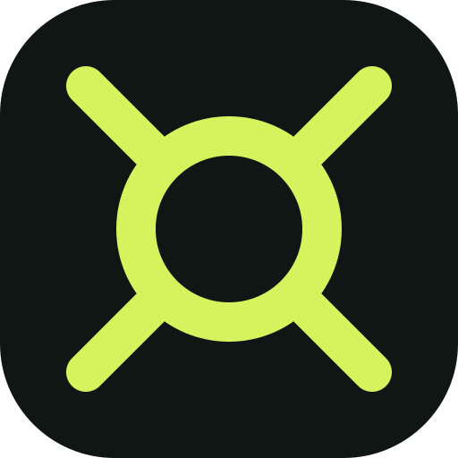

1. Local Machine (Default)
Runs the ONX Manager backend silently in the background with your isolated Python 3.12 runtime and loads the UI directly.
Checking local backend...

Desktop Launcher · Local Panel or Remote VPS Connection
Runs the ONX Manager backend silently in the background with your isolated Python 3.12 runtime and loads the UI directly.
Connect directly to your VPS or a friend's shared ONX panel URL (including Cloudflare Tunnels or reverse proxies).